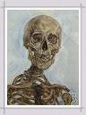
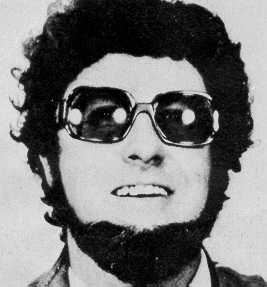

Forums galactiques > Assemblée Galactique : diplomatie officielle > [RP] Mariage
Pages : 1
| Rita Respect diplomatique : 78  19/01 ETU 22:25 | Score : 21 Détails Après quelque nuits torrides passées avec le commandant Larry Underwood, la commandante Rita est tombée en ceinte de lui.
Alors Larry confus de voir le ventre de Rita grossir un petit peut chaque jours, prit son courage à deux mains et la demanda en mariage avant que le bébé vienne au monde. - Larry se mis à genoux, prit la main de Rita, et prononça les mots magiques, Veux tu m’épouser ? – Rita rougit avant de répondre oui. Il mit la bague de fiançailles au doigt de Rita. Après quelques semaines, les préparations de mariage commençait à prendre forme avec notamment l’envoie des invitations et bien sur l’attente des réponses. Le jour temps attendu arriva, les invité était en train d’entré dans l’église et de ce mettre en place. On pouvait voir Larry devant l’hôtel du prêtre très stressé de ce marié. Tout d’un coup on pus entendre la musique commençait, tous les invités ce tue et on put apercevoir Rita accompagné de deux jeunes filles devant elle qui j’étais un tapis de rose blanche et rouge devant Rita et deux autres petite filles qui tenait la long robe. Elle s’avança jusque devant le prêtre elle regarda Larry dans les yeux et le prêtre commença à les marier. Au bout de dix minute on entendit le prêtre dit la phrase magique qu’ils attendaient tout les deux. - Vous pouvez embrasser la marié ! ! On put entendre tous les invités applaudir et crier leur joie. Tous les invités furent invités sur le vaisseau principal de Rita pour faire la fête du mariage. Il y avait de tout à mangez à volontés et à boire bien sur des boissons alcoolisés pour les adultes et non alcoolisé pour les enfants. La fête dura 24H environ et tous les invité furent ramenés chez eux par une escouade de vaisseaux pour les protéger durant leur retour… | ||
| THE_SKILL Respect diplomatique : 6  19/01 ETU 23:22 | Score : 7 Détails Pendant la journée de mariage le commandant THE_SKILL ne loupa pas cette occasion unique.
Il assista au mariage en étant le témoin de la belle rita. De longue heures passèrent et la commandante Rita attendit impatiemment le baiser de son bien aimer. Enfin l’heure arriva, le père de la belle Rita l’accompagna jusqu’au prêtre suivi du grand Larry underwood. « Félicitation pour votre mariage et longue vie au marié !! » Apres se fameux baiser des dizaines de fusés partir dans la ciel accompagné de pétards pour fêté ce bon moment, le commandant THE_SKIL essaya de ne pas s’endormir mais ne pu s’empêcher. Le lendemain il se réveilla dans son lit tout mort de sommeil en ne savent comment il eut atterri dans son lit, il appela Rita pour lui demander comment il s’est retrouvé cher lui et lui expliqua tout. Quelques semaines plus tard le bébé naîtra, le commandant THE_SKILL vena voir les heureux parents et leur offrir un cadeau pour le bébé comme d’autres commandants... | ||
| Tyrian Respect diplomatique : 1334  20/01 ETU 09:56  | Score : 5 Détails Félicitations mes petites chéries !
Ne vous offusquez pas. Le féminin peut l'emporter parfois! Serez tout de rose vétues? Pensez tout de même à brancher le parapluie anti atomique pendant les réjouissances. Car, Il se pourrait bien que je puisse résister à l'envie de vous faire un petit cadeau. Allez ! Que le bonheur vous habite à tout instant ! | ||
| Jacques Mesrine Respect diplomatique : 14  20/01 ETU 11:35 | Score : 14 Détails HRP : Merci de lire tout le rp avant de voter !
Mesrines était mort, réellement mort. Il était au volant de sa voiture criblée de balle. Il commençait à quitter son corps. Un ectoplasme se formait, sortait de sa tête. Son âme sortait de lui. Une fois partit, il traversa le mure puis traversa aussi l’atmosphère. Il passa devant la lune puis continua sa route à la vitesse de la lumière. Il passa devant Saturne, Neptune puis finis sa course dans se systèmes solaire. Arrivé à la limite de celui-ci il va une sonde à une vitesse faible, parcourir l’univers. Il passa devant beaucoup d’autres systèmes solaires puis arriva devant un trou noir… Le trou noir central… Le milieu de l’univers était là, devant ces yeux d’ectoplasme… Il rentra dans celui-ci. La zone ou il venait d’entré était bleu, magnifique… Son diamètre devait être de plusieurs kilomètres de diamètre… Mais se qui lui fais le plus peur c’était cette voix dans sa tête qui lui demandait d’avancez plus vite… Toujours d’avancez plus vite. Arrivez à la fin de ce territoire, il vit un mur… Il le franchit. Il venait de rentré dans une nouvelle zone… Une zone ou on ectoplasme avait froid, avait peur… Au lieu il apercevait quelque chose avancez… Il ne savait pas se que c’était mais il savait tout au fond de lui qu’il fallait l’affronté…Ou fuir… Il continua à avancez, dictant à sa pensés de ralentir son allure. Arrivez devant la forme qu’il voyait au loin, il eut peur comme jamais il n’eut peur. Il voyait une femme, avec le visage arraché… Il décida de fuir… Mais qui était cette femme avec le visage arraché… Après une longue minute de réflexion il s’en souvenait. C’était la première femme qu’il avait tué... Pourquoi revenait telle maintenant ? Pourquoi en se territoire si sombre ? Étais-je en enfer ? Temps de questions qui n’avait pas encore de réponse… Après une longue minute passer à avancez le plus vite possible il se retrouva devant un deuxième mure. Il le franchit sans difficultés. Il se retrouvait maintenant dans un territoire ou tout était rouge… Avait beaucoup de femmes allongées sur des lits qui se matérialisaient comme par magie. Mais sur un lit une femme le surpris, une seule… C’était une ancienne flic qui le poursuivait durant les cinq dernières années de sa vie… Il la vie en petite tenus… Marchant à quatre pattes sur un lit… S’avançant vers lui… Arrivez à sa hauteur, il lui enlevant les boutons de son jean… Il réalisait maintenant qu’il avait toujours voulus couchez avec elle… Mais il savait tout au fond de lui qu’il ne devait pas continuez comme cela… Il devait passez ce second mure qu’il venait de voir beaucoup plus loin. Il partit précipitamment, et alla vers le mure pour le franchir d’une traite. Il arriva sur un nouveau territoire…Il est tout orange et il voyait une longue file d’attente… C’était une foulé d’ectoplasme qui attendait à pertes de vue. Il y rencontré des gens célèbres de sa planètes natal… Mais aussi des gens qui ne ressemblaient pas aux autres. Il était plus grand et avait une carrure plus forte. Mais il ne fit pas plus attention à lui. Il alla vers un autre homme et lui demanda « Mais pourquoi vous attendez comme cela». L’homme lui répondit que les plus patients seront les miens servis… Jacques n’en avait rien à foutre alors il passa devant tout le monde, triplant sa vitesse avec la pensés et quelque minute plus tard il passa par le 4eme mure. Il passa ensuite par un 5eme et 6eme territoire et c’est alors que quand il passa le 6eme territoire il arriva devant un territoire tout blanc avec une petit file d’attente et trois personnes qui ressemblait étrangement à des anges parlait avec un homme. Ils avaient des ailes derrière le dos et était plutôt grand. Il ne prêta pas attention à la file d’attente et se retrouva en premier position. Quand un de ces anges dit au suivant il s’avança et s’asseyait sur un chaise. Le premier ange commença à parler ! - A enfin un cas très intéressant même plus qu’intéressant… dit l’archange Gabriel… - Je pense que la sentence ultime peut être appliquée… dit l’archange Michel. Jacques indigné dit enfin : - Mais vous allez me condamnée ? Sans jugement ? Mais qui êtes vous pour cela ? - Nous sommes les trois archanges juge et nous allons te condamnés à la plus grande sentences qui soit dans le monde du paradis… Nous l’utilisons rarement mais aujourd’hui je pense que le moment est propice pour cela…dit l’ange Raphael… Jacques voyait une bulle apparaître ou on pouvait voir la galaxie tout entière avec des dizaines de milliers de planètes… Il voyait une assemblée, avec beaucoup de personnes qu’on appelait commandant. Il vue des vaisseaux autour des planètes… Et enfin il vit un couple faisant l’amour. A ce moment là, il fut aspiré dans la bulle avec un autre homme qu’il n’avait pas vu au début. Tous les deux venait de renaitre dans le même ventre, celui de Rita… Passés neuf mois, Rita accoucha de jumeaux… | ||
| ocean Respect diplomatique : 708  20/01 ETU 12:25 | Score : 10 Détails Si vous créez une progéniture, franchement noyez la sous des tonnes....d'eau
Vu la dégénérécensce des parents, la galaxie aurait à craindre Oui je sais, je sors | ||
| Eliad Gadil Respect diplomatique : 184  20/01 ETU 14:31 | Score : 9 Détails Honetement, c'est pas une bonne semaine. Ricola et Bliz sont mort, et ces deux la se marient.
Ok je vais rejoindre ocean à la sortit ! | ||
| murphi Respect diplomatique : 134  20/01 ETU 20:06 | Score : 6 Détails Le commandant Murphi entras dans la salle encore festive:
"Woua, pas mal!!Mais vous vous êtes marié!larry fait attention les commandantes prennent tout aux commandants, mais s'est une grande nouvelle! Pourquoi la fête a t-elle durée que 24 heures ? Je n'ais même pas pus venir à la cérémonie, quelle honte pour moi ! Je suis très triste mais ceci est vraiment une semaine bizarre comme la dit Eliad! Quelques uns des plus grands commandants de la galaxie partent, et voila que deux des meilleurs se marient... Vraiment je vais devenir fou!!" Puis il resta dans la salle à réfléchir au bonheur qu'il pourrait avoir avec une femme aussi belle que Rita. | ||
| Hannibal Lecter Respect diplomatique : 9 21/01 ETU 13:31 | Score : 5 Détails Hannibal Lester ouvrit les yeux, mais que faisait-il ici ?
Il venait de sortir du ventre de Rita... Né de l’union de deux être de cette galaxie d’on il ignorait tous. Mais que ce passait-il ? Que venait-il faire ici ? Pourrait-il s’affairer de nouveau à ces passe temps favoris ? Plein de question se mélangeait dans la tête d’Hannibal.... Il lui fallait maintenant découvrir ce nouveau monde et qu’elle mai faits il pourrait y accomplir. | ||
| Rita Respect diplomatique : 78 21/01 ETU 13:57 | Score : 6 Détails Bonjour à tous ,
Et oui sa y est c’est fait j’ai accouché d’une paire d’enfant des jumeaux. Sont-ils pas mignon tous les deux ? ? Et voilà j’ai réussis as trouvé le parrain de ces petits bambin c’est le commandant Sorcier82. Notre famille s’agrandis as vus d’œil ! ! ! Mais jusqu’où grandira-t-elle cette belle famille que nous avons la ? ? Voilà j’espère que notre famille pourra vivre tranquillement. | ||
| murphi Respect diplomatique : 134 21/01 ETU 14:29 | Score : 3 Détails Le commandant Murphi toujours entrain de rêver, dit:
"Oulala mais qu'il sont beau s'est deux petit bébés, il faudrait leurs faire un petit cadeau non ? Bien sur il faut leur faire des cadeaux, je vais envoyer à leur parent 10 MO de leems symboliques. J'aime voir des bébés contents, si seulement je pouvais avoir une femme comme Rita..." Puis il se remit à rêver... | ||
| Sorcier82 Respect diplomatique : 254  22/01 ETU 01:51 | Score : 3 Détails Sorcier s'approcha des 2 bébés et les prit dans ses bras!
Ce sont de beaux bébés, et je sens qu'ils deviendront de puissants guerriers. Il le faut bien de toutes façons, la guerre fait rage partout dans cette galaxie. Bon soyons plus optimistes et fêtons ça^^ |
Pages : 1
Forums galactiques > Assemblée Galactique : diplomatie officielle > [RP] Mariage